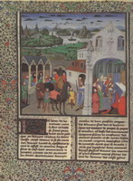
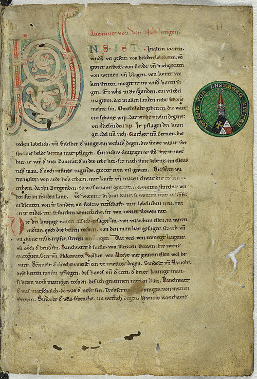
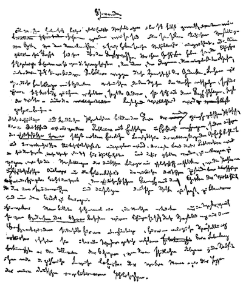

Периоды исторического развития немецкого языка
Согласно теории Людвига Вильсера, прародиной германцев считается территория современной Дании и частично южные территории Швеции и северной Германии. Причём в состав переселенцев входили различные по своему происхождению народы Евразии. Со II тысячелетия до н. э. начинает складываться прагерманская культура и образовывается язык. На юго-востоке и юге от германцев проживали другие народы, контакты с которыми привнесли в прагерманский язык некоторые заимствования (например, из кельтского или латинского). Так, немецкое слово Hals соответствует латинскому collus, древневерхненемецкое wat происходит от слова vadum.
К тому времени древнеиталийские народы пришли на территорию Апеннинского полуострова, где позднее был построен и развивался Рим. К I тысячелетию до н. э. на земли, ранее занимаемые италийскими народами, пришли германцы, продолжив экспансию на земли кельтских народов: заняв территории между реками Эмс и Рейн, германцы двинулись на юг, к Майну, а затем — к Дунаю. Учащение контактов с кельтами привело к заимствованию большого количества новых слов. Например, были адаптированы такие слова как Amt, Recht, Eisen. Другими соседями германцев на востоке были венеды, иллирийцы и славяне, которые также имели языковые контакты друг с другом.
До наших времён со времени германцев дошли некоторые письменные памятники, однако их недостаточно для того, чтобы в полной мере изучить письменность. Со II по XII века германцы использовали руническую письменность, которая была впоследствии вытеснена латиницей в результате христианизации германцев. В основу рунической письменности был положен северно-этрусский алфавит. Об этом свидетельствуют археологические находки, сделанные в Словении в 1812 году.
Появление древневерхненемецкого языка не имеет чёткой датировки, однако лингвисты сходятся во мнении, что его формирование предопределило вторым (древневерхненемецким) передвижением согласных в конце V века. В истории немецкого языка принято считать датой завершения этого периода 1050 год. Предпосылками формирования языка в области современного немецкоязычного пространства стали миграционные процессы, происходившие раннее, во времена Великого переселения, падение Римской империи и образование в этой области ряда германских государств, которые, однако, просуществовали недолго. Сильнейшим государством на первой стадии средневековья становится Франкская империя Меровингов, основанная королём Хлодвигом I в 482 году. В состав этого королевства входят следующие несколько столетий и другие германские земли, которые создают основу для общего языкового пространства и складывания в нем общего языка. Процесс включения земель продолжаются при Каролингах в VIII веке, когда границы королевства дошли до Эльбы и Зале на востоке, Эбро на западе и до Рима на юге. В 843 году государство, построенное Карлом Великим, было разделено на три части по Верденскому договору. Восточная часть королевства первым королем, которой стал Людовик II Немецкий, стала регионом складывания немецкой нации. Немецкий язык на этой стадии своего развития всё ещё не представлял единого целого, однако государство и церковь способствовали тому, чтобы многие германские языки пошли на сближение. Так алеманны, баварцы, жители Тюрингии, саксонцы и франки стаи формировать собственные диалекты. Складыванию общего языка способствовало и развитие литературы в этот период. Тем не менее, даже принимая во внимание очевидное сближение отдельных ветвей, между восточными и западными языками наблюдалось значительное расхождение.
Первейшие литературные памятники на древневерхненемецком языке были созданы в монастырях и церквях, монахи которых переписывали и сохраняли свои тексты. Примечательно, что эти тексты носили не только религиозный характер, что характерно для этого периода. Среди литературных источников, дошедших до наших дней, есть и светская литература. Например, к таким произведениям относится Песнь о Хильдебранде, возникшая в VII веке и в начале VIII века записанная монахами монастыря Фульды.
Началом формирования средневерхненемецкого языка принято считать 1050 год, а датой завершения фазы его существования — 1350 (период позднего средневековья). Процессы, предопределившие его появление, проявляли себя по-разному в различных частях средневековой Германии, так как язык по-прежнему был дифференцирован. Этому процессу способствовало также то, что немецкие земли и власти на местах становились всё более независимыми друг от друга. Свою роль сыграла также экспансия на восток — западные области Польши (Силезия) и Чехии (Богемия).
Средневерхненемецкий язык характеризуется следующими отличительными признаками:
- расширение сферы использования немецкого языка в письменности, новые литературные жанры;
- образование письменной наддиалектной формы литературного языка - так называемого классического средневерхненемецкого языка;
- постепенное вытеснение латыни из области деловой документации;
- формирование основ стиля немецкой научной прозы;
- расширение немецкой языковой области в результате восточной экспансии немецких рыцарских орденов, возникновение колониальных диалектов;
- лексические и грамматические изменения.
Сфера использования письменного немецкого языка в этот период стала гораздо шире, чем в предшествующий древневерхненемецкий период. Значительное развитие получили лирика и эпос, а также стихотворная драма. Кроме того, оригинальная немецкая проза наряду с переводной прозой, всё более распространяясь, ограничивает использование латинского языка как в поэтических формах, так и при рассмотрении вопросов научного и практического характера. Уже около 1200 г. существовало историческое сочинение в прозе, которое было посвящено Дитриху Бернскому. Оно получило отражение в северной «Саге о Тидреке» (1260 г.). Первая правовая книга на немецком языке «Саксонское зерцало» и первый немецкий труд по истории «Саксонская мировая хроника» Эйке из Репгова и Сан-Галленская хроника относятся к первой половине 13 в. В произведениях немецких мистиков мир религиозных переживаний отражен в оригинальной немецкой прозе. Образцом ораторской прозы являются проповеди Бертольда Регенсбургского.
Ранненововерхненемецкий период является переходным периодом от средневекового немецкого к собственно современному немецкому языку. Основной характеристикой языкового развития в этот период является поэтапное формирование новой формы существования языка, общенационального немецкого литературного языка. Ранненововерхненемецкий период является начальным этапом этого процесса. В этот период создаются первые предпосылки развития национального литературного языка.
Основным признаком национального литературного языка является общенациональная значимость, т.е. наличие наддиалектных единых, в рамках литературного языка обязательных для всех говорящих на немецком языке фонетических, грамматических, орфографических и лексических языковых норм. Однако отсутствие в Германии единого политического, экономического и культурного центра, каким, например, являлся Лондон для Англии и Париж для Франции, привело к тому, что немецкая языковая норма в своем формировании не могла ориентироваться на какой-либо один языковой центр. Несмотря на это, особенно важную роль в становлении немецкой национальной нормы сыграла Саксония – Курфюршество Мейсенское, объединившее в 15-16 вв. под своей властью основные восточнонемецкие территории – Верхнюю Саксонию с большой частью Тюрингии, Фогтланд, славянскую Лужицу и Силезию. На этих территориях возникли новые немецкие диалекты, которые объединяются обычно под названием восточносредненемецкого (Ostmitteldeutsch) диалекта. Его отличительным признаком является смешанный характер, так как в освоении этих земель участвовали переселенцы из разных частей Германии, носители разных диалектов.
Развитие современного немецкого языка начинается примерно с середины XVII века, после окончания Тридцатилетней войны (1618—1648).
В рамках данного периода можно выделить три этапа:
-- начальная стадия развития общенемецкого литературного языка (1650-1770);
-- завершение формирования общенемецкого литературного языка и его закрепление в произведениях немецкой классической литературы (1770-1830);
-- дальнейшее развитие общенемецкого литературного языка в новое и новейшее время (1830 по настоящее время).
Более чем за три с половиной столетия существования нововерхненемецкого языка (далее — (современного) немецкого языка) основные изменения коснулись лексического строя и отчасти правописания, что было связано прежде всего с развитием науки и техники, экономической и политической жизнью Германии, а также с межъязыковыми контактами.
Лексический строй языка претерпевал самые сильные изменения, так как с 18 века начинается эпоха активного развития науки, что неминуемо приводит к появлению массы новых терминов, используемых по назначению в науке или как синонимы в разговорной речи.
Начиная с конца 18 в. и до наших дней происходит интенсивное дальнейшее развитие и обогащение лексического состава, грамматического строя и системы функциональных стилей литературного языка. Мощным толчком для этого послужили расцвет немецкой национальной литературы, классической немецкой философии, быстрое развитие политической литературы и прессы, бурный прогресс науки и техники. Все это вместе создало тот современный немецкий язык, который по праву приобрёл мировую известность, став одним из языков межнационального общения.


